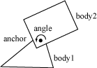
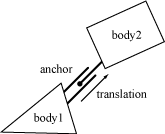

Getting started tutorial¶
About¶
pybox2d is a 2D rigid body simulation library for games. Programmers can use it in their games to make objects move in believable ways and make the game world more interactive. From the game’s point of view a physics engine is just a system for procedural animation.
Box2D, the library behind pybox2d, is written in portable C++ and bound to Python by Cython.
Prerequisites¶
In this manual I’ll assume you are familiar with basic physics concepts, such as mass, force, torque, and impulses. If not, please first consult the many tutorials provided by Chris Hecker and David Baraff (Google these names). You do not need to understand their tutorials in great detail, but they do a good job of laying out the basic concepts that will help you use pybox2d.
Wikipedia is also an excellent source of physics and mathematics knowledge. In some ways it is more useful than Google, because it has carefully crafted content.
Box2D was created as part of a physics tutorial at the Game Developer Conference. You can get these tutorials from the download section of box2d.org.
Core Concepts¶
pybox2d works with several fundamental objects. We briefly define these objects here and more details are given later in this document.
shape¶
A 2D geometrical object, such as a circle or polygon.
rigid body¶
A chunk of matter that is so strong that the distance between any two bits of matter on the chunk is completely constant. They are hard like a diamond. In the following discussion we use body interchangeably with rigid body.
fixture¶
A fixture binds a shape to a body and adds material properties such as density, friction, and restitution.
constraint¶
A constraint is a physical connection that removes degrees of freedom from bodies. In 2D a body has 3 degrees of freedom (two translation coordinates and one rotation coordinate). If we take a body and pin it to the wall (like a pendulum) we have constrained the body to the wall. At this point the body can only rotate about the pin, so the constraint has removed 2 degrees of freedom.
contact constraint¶
A special constraint designed to prevent penetration of rigid bodies and to simulate friction and restitution. You do not create contact constraints; they are created automatically by Box2D.
joint¶
This is a constraint used to hold two or more bodies together. pybox2d supports several joint types: revolute, prismatic, distance, and more. Some joints may have limits and motors.
joint limit¶
A joint limit restricts the range of motion of a joint. For example, the human elbow only allows a certain range of angles.
joint motor¶
A joint motor drives the motion of the connected bodies according to the joint’s degrees of freedom. For example, you can use a motor to drive the rotation of an elbow.
world¶
A physics world is a collection of bodies, fixtures, and constraints that interact together. pybox2d supports the creation of multiple worlds, but this is usually not necessary or desirable.
Modules¶
Box2D is composed of three modules: Common, Collision, and Dynamics. The Common module has code for allocation, math, and settings. The Collision module defines shapes, a broad-phase, and collision functions/queries. Finally the Dynamics module provides the simulation world, bodies, fixtures, and joints. As a pybox2d user, you do not need to worry about this for the most part, unless you are delving into the C++ source.
Units¶
pybox2d works with floating point numbers, so some tolerances have to be used to make pybox2d perform well. These tolerances have been tuned to work well with meters-kilogram-second (MKS) units. In particular, Box2D has been tuned to work well with moving objects between 0.1 and 10 meters. So this means objects between soup cans and buses in size should work well. Static objects may be up to 50 meters without too much trouble.
Being a 2D physics engine, it is tempting to use pixels as your units. Unfortunately this will lead to a poor simulation and possibly weird behavior. An object of length 200 pixels would be seen by Box2D as the size of a 45 story building. Imagine trying to simulate the movement of a high-rise building with an engine that is tuned to simulate ragdolls and barrels. It isn’t pretty.
Caution
Box2D is tuned for MKS units. Keep the size of moving objects roughly between 0.1 and 10 meters. You’ll need to use some scaling system when you render your environment and actors. The pybox2d testbed does this by using a viewport transform (pyglet/pyqt) or simple coordinate conversions (pygame).
It is best to think of pybox2d bodies as moving billboards upon which you attach your artwork. The billboard may move in a unit system of meters, but you can convert that to pixel coordinates with a simple scaling factor. You can then use those pixel coordinates to place your sprites, etc.
pybox2d uses radians for angles. The body rotation is stored in radians and may
grow unbounded. Consider normalizing the angle of your bodies if the magnitude
of the angle becomes too large (body.angle).
Factories and Definitions¶
Memory management plays a central role in the design of the pybox2d API. So when you create a Body or a Joint, you need to call the factory functions on World. There are creation functions:
from pybox2d import World, StaticBodyDef
world = World()
defn = StaticBodyDef(position=(0, 0))
body = world.create_body_from_def(defn)
And there are corresponding destruction functions:
world.destroy_body(body)
When you create a body or joint, you have the option of providing a definition or using some of pybox2d’s convenient kwarg support. These definitions contain all the information needed to build the body or joint. I’ll provide further examples of possible usage shortly.
Since fixtures must be parented to a body, they are created and destroyed using a factory method on Body:
shape = CircleShape(radius=1.0)
defn = FixtureDef(shape=shape, density=2.0)
fixture = body.create_fixture_from_def(defn)
body.destroy_fixture(fixture)
There is also shortcut to create a fixture directly from the shape and density.
fixture = body.create_fixture(shape=shape, density=1.0)
Factories do not retain references to the definitions. So you can create and reuse definitions, but you do not need to store them.
pybox2d niceties¶
The most efficient way to create many bodies or fixtures is using create_body_from_def() or create_fixture_from_def() on BodyDef and FixtureDef. A marginally slower (but significantly more convenient) pybox2d shorthand exists allowing you to forego these definitions.
The following are equivalent:
shape = EdgeShape()
shape.vertices = [(-40, 0), (40, 0)]
body = world.create_static_body()
body.position = (1, 0)
and
body = world.create_static_body(position=(1, 0))
body.create_edge_fixture(vertices=[(-40, 0), (40, 0)])
World has the following creation functions available. Be sure to read their docstrings (i.e., help(World.create_dynamic_body) ) for further information.
[[Bodies]]
world.create_body_from_def
world.create_dynamic_body
world.create_kinematic_body
world.create_static_body
[[Joints]]
world.create_revolute_joint
world.create_distance_joint
world.create_friction_joint
world.create_gear_joint
world.create_motor_joint
world.create_mouse_joint
world.create_prismatic_joint
world.create_pulley_joint
world.create_rope_joint
world.create_weld_joint
world.create_wheel_joint
Bodies have similar methods for fixture creation, described in later sections.
Vec2 is pybox2d’s 2d vector class. In most cases, it is not necessary to specifically pass a Vec2 into a function. As you can see in the EdgeShape example above, the two vertices were passed as tuples. Similarly, properly sized (i.e., 2 element) lists or sequences can also be used.
If you intend to do calculations on 2d vectors, you will want to use this class – or substitute your own, should you so choose.
The following are all equivalent:
pos = body.position + Vec2(1, 0)
pos = body.position + (1, 0)
pos = body.position + [1, 0]
Note that you cannot just make a tuple and expect it to behave as a Vec2. This works because the above properties/methods return Vec2. Should you want to use a vector for something else, first you would need to define one:
myvec = Vec2(0, 5) # myvec = (0, 5)
myvec = myvec * 3 # myvec = (0, 15)
myvec = myvec + (1, 1) # myvec = (1, 16)
Body subclassing¶
In pybox2d, with the help of Cython, we can now subclass Body and use them directly in our engine. For example:
class GameActor(object):
def print_position(self):
print('Hi, I'm at {}!'.format(self.position))
actor = GameActor()
body = world.create_static_body(position=(1, 0), body_class=GameActor)
body.print_position()
User data¶
The Fixture and Body classes also allow you to attach your own custom user data. This is handy when you are examining pybox2d data structures and you want to determine how they relate to the data structures in your game engine without subclassing as in the previous section.
For example, it is typical to attach an actor pointer to the rigid body on that actor. This sets up a circular reference. If you have the actor, you can get the body. If you have the body, you can get the actor.
class GameActor(object):
pass
actor = GameActor()
actor.body = world.create_static_body(data=actor)
Here are some examples of cases where you would need the user data:
- Applying damage to an actor using a collision result.
- Playing a scripted event if the player is inside an axis-aligned box.
- Accessing a game structure when pybox2d notifies you that a joint is going to be destroyed.
Keep in mind that user data is optional and you can put anything in it. However, you should be consistent. For example, an integer in one, a dict in another, will lead to confusion when you are searching for a specific body.
Hello pybox2d¶
In the distribution of pybox2d is a Hello World example. The program creates a large ground box and a small dynamic box. This code does not contain any graphics. All you will see is text output in the console of the box’s position over time.
This is a good example of the absolute basics of pybox2d, without letting graphics and GUIs get in the way.
Creating a World¶
Every pybox2d program begins with the creation of a World object. World is the physics hub that manages memory, objects, and simulation. It is easy to create a pybox2d world.
from pybox2d import World
world = World(gravity=(0, -10))
Caution
Be sure to keep a reference to your world while it’s still in use.
So now we have our physics world, let’s start adding some stuff to it.
Creating a Ground Box¶
Bodies are built using the following steps:
- Use the world object to create a body with a position, damping, etc.
- Create fixtures on the body with a shape, friction, density, etc.
To illustrate what goes on behind the scenes of pybox2d, let’s create the body the long way. This means that we need to specifically create a body definition first. Don’t get discouraged – I’ll show how much easier it can be later.
# Define the ground body.
from pybox2d import StaticBodyDef
defn = StaticBodyDef(position=(0, -10))
The body definition is passed to the world object to create the ground body. The world object does not keep a reference to the body definition. The ground body is created as a static body. Static bodies don’t collide with other static bodies and are immovable. Box2D determines that a body is static when it has zero mass. Bodies have zero mass by default; therefore they are static by default.
# Make a body fitting this definition in the world.
ground_body = world.create_body_from_def(defn)
We use the box property to form the ground polygon into a box shape, with the box centered on the origin of the parent body.
from pybox2d import PolygonShape
box = PolygonShape(box=(50, 10))
Setting it as a box takes the half-width and half-height (extents). So in this case the ground box is 100 units wide (x-axis) and 20 units tall (y-axis). Box2D is tuned for meters, kilograms, and seconds. So you can consider the extents to be in meters. Box2D generally works best when objects are the size of typical real world objects. For example, a barrel is about 1 meter tall. Due to the limitations of floating point arithmetic, using Box2D to model the movement of glaciers or dust particles is not a good idea.
We finish the ground body by creating the shape fixture.
from pybox2d import FixtureDef
# And create a fixture definition to hold the shape
defn = FixtureDef(shape=box)
# Add the ground shape to the ground body.
ground_body.create_fixture_from_def(defn)
Box2D does not keep a reference to the shape. It clones the data into a new object.
Note that every fixture must have a parent body, even fixtures that are static. However, you can attach all static fixtures to a single static body. This need for static bodies is done to make the Box2D code more uniform internally, reducing the number of potential bugs.
Here’s a big shortcut to all of the above. The following few lines are equivalent to all of the steps of this example so far:
from pybox2d import World
world = World()
ground_body = world.create_static_body(position=(0, -10))
ground_body.create_polygon_fixture(box=(50, 10))
Creating a Dynamic Body¶
So now we have a ground body. We can use the same technique to create a dynamic body. The main difference, besides dimensions, is that we must establish the dynamic body’s mass properties.
First we create the body using create_dynamic_body. By default bodies are static, so we should set the BodyType at construction time to make the body dynamic. Let’s do this with the new kwargs methods.
body = world.create_dynamic_body(position=(0, 4))
Next we create and attach a polygon fixture:
box = body.create_polygon_fixture(box=(1, 1), density=1, friction=0.3)
Notice that we set density to 1. The default density is zero. Also, the friction on the shape is set to 0.3. Both of these are from the fixture definition and not the shape definition. This is all taken care of behind the scenes using this method with pybox2d. You could very well create your own FixtureDef with those parameters and it would have the same effect. This would require at least 5x more code on your part.
That’s it for initialization. We are now ready to begin simulating.
Simulating the World (of Box2D)¶
So we have initialized the ground box and a dynamic box. Now we are ready to set Newton loose to do his thing. We just have a couple more issues to consider.
Box2D uses a computational algorithm called an integrator. Integrators simulate the physics equations at discrete points of time. This goes along with the traditional game loop where we essentially have a flip book of movement on the screen. So we need to pick a time step for pybox2d. Generally physics engines for games like a time step at least as fast as 60Hz or 1/60 seconds. You can get away with larger time steps, but you will have to be more careful about setting up the definitions for your world. We also don’t like the time step to change much. A variable time step produces variable results, which makes it difficult to debug. So don’t tie the time step to your frame rate (unless you really, really have to). Without further ado, here is the time step.
# Prepare for simulation. Typically we use a time step of 1/60 of a
# second (60Hz) and 6 velocity/2 position iterations. This provides a
# high quality simulation in most game scenarios.
time_step = 1.0 / 60
In addition to the integrator, Box2D also uses a larger bit of code called a constraint solver. The constraint solver solves all the constraints in the simulation, one at a time. A single constraint can be solved perfectly. However, when we solve one constraint, we slightly disrupt other constraints. To get a good solution, we need to iterate over all constraints a number of times.
There are two phases in the constraint solver: a velocity phase and a position phase. In the velocity phase the solver computes the impulses necessary for the bodies to move correctly. In the position phase the solver adjusts the positions of the bodies to reduce overlap and joint detachment. Each phase has its own iteration count. In addition, the position phase may exit iterations early if the errors are small.
The suggested iteration count for pybox2d is 10 for both velocity and position. You can tune this number to your liking, just keep in mind that this has a trade-off between speed and accuracy. Using fewer iterations increases performance but accuracy suffers. Likewise, using more iterations decreases performance but improves the quality of your simulation. For this simple example, we don’t need much iteration. Here are our chosen iteration counts.
vel_iters, pos_iters = 6, 2
Note that the time step and the iteration count are completely unrelated. An iteration is not a sub-step. One iteration is a single pass over all the constraints within a time step. You can have multiple passes over the constraints within a single time step. Don’t worry if this is too confusing. Often, setting both iterations to 10 will give you the results you desire without having to worry about much else.
We are now ready to begin the simulation loop. In your game the simulation loop
can be merged with your game loop. In each pass through your game loop you call
world.step(). Just one call is usually enough, depending on your frame rate
and your physics time step. After stepping, you should call
world.clear_forces() to clear any forces you applied to the bodies.
The Hello World program was designed to be dead simple, so it has no graphical output. Rather than being utterly boring by producing no output, the code prints out the position and rotation of the dynamic body. Here is the simulation loop that simulates 60 time steps for a total of 1 second of simulated time.
# This is our little game loop.
for i in range(60):
# Instruct the world to perform a single step of simulation. It is
# generally best to keep the time step and iterations fixed.
world.step(time_step, vel_iters, pos_iters)
# Clear applied body forces. We didn't apply any forces, but you
# should know about this function.
world.clear_forces()
# Now print the position and angle of the body.
print(body.position, body.angle)
The output shows the box falling and landing on the ground box. Your output should look like this:
Vec2(0, 3.99722) 0.0
Vec2(0, 3.99167) 0.0
Vec2(0, 3.98333) 0.0
Vec2(0, 3.97222) 0.0
Vec2(0, 3.95833) 0.0
Vec2(0, 3.94167) 0.0
Vec2(0, 3.92222) 0.0
...
This indicates that the body is slowly falling (in the y-axis, since this is how gravity is defined). Its angle is not changing during the beginning.
Collision Module¶
About¶
The Collision module contains shapes and functions that operate on them. The module also contains a dynamic tree and broad-phase to acceleration collision processing of large systems.
Shapes¶
Shapes describe collision geometry and may be used independently of physics simulation. You may perform several operations with shapes.
pybox2d shapes implement the Shape base class. The base class defines functions to:
- Test a point for overlap with the shape.
- Perform a ray cast against the shape.
- Compute the shape’s AABB.
- Compute the mass properties of the shape.
In addition, each shape has a type member and a radius. The radius even applies to polygons, as discussed below.
Circle Shapes¶
Circle shapes have a position and radius.
Circles are solid. You cannot make a hollow circle. However, you can create chains of line segments using polygon shapes.
circle = CircleShape(center=(1, 2), radius=0.5)
Polygon Shapes¶
Polygon shapes are solid convex polygons. A polygon is convex when all line segments connecting two points in the interior do not cross any edge of the polygon. Polygons are solid and never hollow. However, you can create line segments using 2 point polygons.
![Polygon Shapes]images/image003.gif]
You must create polygons with a counter clockwise winding (CCW). We must be careful because the notion of CCW is with respect to a right-handed coordinate system with the z-axis pointing out of the plane. This might turn out to be clockwise on your screen, depending on your coordinate system conventions.
You can create a polygon shape by passing in a vertex array. The maximal size of the array is controlled by maxPolygonVertices which has a default value of 16. This is more than sufficient to describe most convex polygons.
# This defines a triangle in CCW order.
triangle = PolygonShape(vertices=[(0, 0), (1, 0), (0, 1)])
The polygon shape has some custom initialization functions to create boxes.
box = PolygonShape(box=(half_width, half_height))
box = PolygonShape(box=(half_width, half_height, (center_x, center_y), angle))
Polygons inherit a radius from Shape. The radius creates a skin around the polygon. The skin is used in stacking scenarios to keep polygons slightly separated. This allows continuous collision to work against the core polygon.
Shape Point Test¶
You can test a point for overlap with a shape. You provide a transform for the shape and a world point.
In [1]: from pybox2d import Transform
In [2]: Transform()
Out[2]: Transform(position=Vec2(0.0, 0.0), angle=0.0)
So, to use a transform to test a point:
transform = Transform()
hit = shape.test_point(transform, (5, 2))
Bilateral Functions¶
The Collision module contains bilateral functions that take a pair of shapes and compute some results. These include:
- Contact manifolds
- Distance
- Time of impact
Contact Manifolds¶
** TODO: not yet implemented **
Box2D has functions to compute contact points for overlapping shapes. If we consider circle-circle or circle-polygon, we can only get one contact point and normal. In the case of polygon-polygon we can get two points. These points share the same normal vector so Box2D groups them into a manifold structure. The contact solver takes advantage of this to improve stacking stability.
Normally you don’t need to compute contact manifolds directly, however you will likely use the results produced in the simulation.
The Manifold structure holds a normal vector and up to two contact points. The normal and points are held in local coordinates. As a convenience for the contact solver, each point stores the normal and tangential (friction) impulses.
The WorldManifold structure can be used to generate the world coordinates of the contact normal and points. You need to provide a Manifold and the shape transforms and radii.
world_manifold = WorldManifold()
world_manifold.initialize(manifold, transformA, shapeA.radius, transformB,
shapeB.radius)
points = [worldManifold.points[i] for i in range(manifold.point_count)]
During simulation shapes may move and the manifolds may change. Points may be added or removed. You can detect this using get_point_states.
state1, state2 = get_point_states(manifold1, manifold2)
if state1 == 'remove':
pass
# process event
Distance¶
** TODO: not yet implemented **
The Distance function can be used to compute the distance between two shapes. The distance function needs both shapes to be converted into a DistanceProxy. There is also some caching used to warm start the distance function for repeated calls. You can see the details in b2Distance.h.
Time of Impact¶
If two shapes are moving fast, they may tunnel through each other in a single time step.
The TimeOfImpact is used to determine the time when two moving shapes collide. This is called the *time of impact *(TOI). The main purpose of TimeOfImpact is for tunnel prevention. In particular, it is designed to prevent moving objects from tunneling outside of static level geometry.
This function accounts for rotation and translation of both shapes, however if the rotations are large enough, then the function may miss a collision. However the function will still report a non-overlapped time and will capture all translational collisions.
The time of impact function identities an initial separating axis and ensures the shapes do not cross on that axis. This will miss collisions that are clear at the final positions. While this approach may miss some collisions, it is very fast and adequate for tunnel prevention.
It is difficult to put a restriction on the rotation magnitude. There may be cases where collisions are missed for small rotations. Normally, these missed rotational collisions should not harm game play.
The function requires two shapes (converted to DistanceProxy) and two Sweep structures. The sweep structure defines the initial and final transforms of the shapes.
You can use fixed rotations to perform a shape cast. In this case, the time of impact function will not miss any collisions.
Dynamic Tree¶
** TODO: This might not function at all in pybox2d *
The DynamicTree class is used by Box2D to organize large numbers of shapes efficiently. The class does not know about shapes. Instead it operates on axis-aligned bounding boxes (AABBs) with user data pointers.
The dynamic tree is a hierarchical AABB tree. Each internal node in the tree can has two children. A leaf node is a single user AABB.
The tree structure allows for efficient ray casts and region queries. For example, you may have hundreds of shapes in your scene. You could perform a ray cast against the scene in a brute force manner by ray casting each shape. This would be inefficient because it does not take advantage of shapes being spread out. Instead, you can maintain a dynamic tree and perform ray casts against the tree. This traverses the ray through the tree skipping large numbers of shapes.
A region query uses the tree to find all leaf AABBs that overlap a query AABB. This is faster than a brute force approach because many shapes can be skipped.

Normally you will not use the dynamic tree directly. Rather you will go through the World class for ray casts and region queries. If you do plan to create your own dynamic tree, you can learn how to use it by looking at how Box2D uses it (in C++, there are no Python examples TODO).
Broad-phase¶
Collision processing in a physics step can be divided into narrow-phase and broad-phase. In the narrow-phase we compute contact points between pairs of shapes. Imagine we have N shapes. Using brute force, we would need to perform the narrow-phase for N*N/2 pairs.
The BroadPhase class reduces this load by using a dynamic tree for pair management. This greatly reduces the number of narrow-phase calls.
Normally you do not interact with the broad-phase directly. Instead, Box2D creates and manages a broad-phase internally. Also, BroadPhase is designed with Box2D’s simulation loop in mind, so it is likely not suited for other use cases. This means you, as a pybox2d user, also do not have to worry about this.
Dynamics Module¶
Overview¶
The Dynamics module is the most complex part of Box2D and is the part you likely interact with the most. The Dynamics module sits on top of the Common and Collision modules, so you should be familiar with those by now.
The Dynamics module contains:
- shape fixture class
- rigid body class
- contact class
- joint classes
- world class
- listener classes
There are many dependencies between these classes so it is difficult to describe one class without referring to another. In the following, you may see some references to classes that have not been described yet. Therefore, you may want to quickly skim this chapter before reading it closely.
The dynamics module is covered in the following chapters.
Fixtures¶
About¶
Recall that shapes don’t know about bodies and may be used independently. Therefore pybox2d provides the Fixture class to attach shapes to bodies. Fixtures hold the following:
- a single shape
- density, friction, and restitution
- collision filtering flags
- back pointer to parent body
- user data
- sensor flag
These are described in the following sections.
Fixture Creation¶
Fixtures are created by initializing a fixture definition and then passing the definition to the parent body.
fixture_def = FixtureDef(shape=my_shape, density=1)
my_fixture = my_body.create_fixture_from_def(fixture_def)
or equivalently,
my_fixture = my_body.create_fixture(shape=my_shape, density=1)
This creates the fixture and attaches it to the body. You do not need to store the fixture pointer since the fixture will automatically be destroyed when the parent body is destroyed. You can create multiple fixtures on a single body.
You can destroy a fixture on the parent body. You may do this to model a breakable object. Otherwise you can just leave the fixture alone and let the body destruction take care of destroying the attached fixtures.
my_body.destroy_fixture(my_fixture)
Density¶
The fixture density is used to compute the mass properties of the parent body. The density can be zero or positive. You should generally use similar densities for all your fixtures. This will improve stacking stability.
The mass of a body is automatically adjusted when you create a fixture.
Friction¶
Friction is used to make objects slide along each other realistically. Box2D supports static and dynamic friction, but uses the same parameter for both. Friction is simulated accurately in Box2D and the friction strength is proportional to the normal force (this is called Coulomb friction). The friction parameter is usually set between 0 and 1, but can be any non-negative value. A friction value of 0 turns off friction and a value of 1 makes the friction strong. When the friction force is computed between two shapes, Box2D must combine the friction parameters of the two parent fixtures. This is done with the geometric mean:
from math import sqrt
friction = sqrtf(shape1.friction*shape2.friction)
So if one fixture has zero friction then the contact will have zero friction.
Restitution¶
Restitution is used to make objects bounce. The restitution value is usually set to be between 0 and 1. Consider dropping a ball on a table. A value of zero means the ball won’t bounce. This is called an inelastic collision. A value of one means the ball’s velocity will be exactly reflected. This is called a perfectly elastic collision. Restitution is combined using the following formula.
restitution = max(shape1.restitution, shape2.restitution)
Fixtures carry collision filtering information to let you prevent collisions between certain game objects.
When a shape develops multiple contacts, restitution is simulated approximately. This is because Box2D uses an iterative solver. Box2D also uses inelastic collisions when the collision velocity is small. This is done to prevent jitter.
Filtering¶
Collision filtering is a system for preventing collision between fixtures. For example, say you make a character that rides a bicycle. You want the bicycle to collide with the terrain and the character to collide with the terrain, but you don’t want the character to collide with the bicycle (because they must overlap). pybox2d supports such collision filtering using categories and groups.
pybox2d supports 16 collision categories. For each fixture you can specify which category it belongs to. You also specify what other categories this fixture can collide with. For example, you could specify in a multiplayer game that all players don’t collide with each other and monsters don’t collide with each other, but players and monsters should collide. This is done with masking bits. For example:
player_def = FixtureDef(category_bits=0x0002, mask_bits=0x0004, ...)
monster_def = FixtureDef(category_bits=0x0004, mask_bits=0x0002, ...)
Collision groups let you specify an integral group index. You can have all fixtures with the same group index always collide (positive index) or never collide (negative index). Group indices are usually used for things that are somehow related, like the parts of a bicycle. In the following example, fixture1 and fixture2 always collide, but fixture3 and fixture4 never collide.
fixturedef_1.filter = FilterInfo(group_index=2)
fixturedef_2.filter = FilterInfo(group_index=2)
fixturedef_3.filter = FilterInfo(group_index=-8)
fixturedef_4.filter = FilterInfo(group_index=-8)
Collisions between fixtures of different group indices are filtered according the category and mask bits. In other words, group filtering has higher precedence than category filtering.
Note that additional collision filtering occurs in Box2D. Here is a list:
- A fixture on a static body never collides with a fixture on another static body.
- Fixtures on the same body never collide with each other.
- You can optionally enable/disable collision between fixtures on bodies connected by a joint.
Sometimes you might need to change collision filtering after a fixture has already been created. You can get and set the Filter structure on an existing fixture using the filterData property. Note that changing the filter data will not add or remove contacts until the next time step (see the World class in the C++ source code).
Sensors¶
Sometimes game logic needs to know when two fixtures overlap yet there should be no collision response. This is done by using sensors. A sensor is a fixture that detects collision but does not produce a response.
You can flag any fixture as being a sensor. Sensors may be static or dynamic. Remember that you may have multiple fixtures per body and you can have any mix of sensors and solid fixtures.
Sensors do not generate contact points. There are two ways to get the state of
a sensor, Contact.touching, and during the ContactListener
callbacks, BeginContact and EndContact.
Bodies¶
About¶
Bodies have position and velocity. You can apply forces, torques, and impulses to bodies. Bodies can be static, kinematic, or dynamic. Here are the body type definitions:
world.create_static_body¶
A static body has does not move under simulation and behaves as if it has infinite mass. Internally, Box2D stores zero for the mass and the inverse mass. Static bodies can be moved manually by the user. A static body has zero velocity. Static bodies do not collide with other static or kinematic bodies.
world.create_kinematic_body¶
A kinematic body moves under simulation according to its velocity. Kinematic bodies do not respond to forces. They can be moved manually by the user, but normally a kinematic body is moved by setting its velocity. A kinematic body behaves as if it has infinite mass, however, Box2D stores zero for the mass and the inverse mass. Kinematic bodies do not collide with other static or kinematic bodies.
world.create_dynamic_body¶
A dynamic body is fully simulated. They can be moved manually by the user, but normally they move according to forces. A dynamic body can collide with all body types. A dynamic body always has finite, non-zero mass. If you try to set the mass of a dynamic body to zero, it will automatically acquire a mass of one kilogram.
Bodies are the backbone for fixtures. Bodies carry fixtures and move them around in the world. Bodies are always rigid bodies in Box2D. That means that two fixtures attached to the same rigid body never move relative to each other.
Fixtures have collision geometry and density. Normally, bodies acquire their mass properties from the fixtures. However, you can override the mass properties after a body is constructed. This is discussed below.
You usually keep pointers to all the bodies you create. This way you can query the body positions to update the positions of your graphical entities. You should also keep body pointers so you can destroy them when you are done with them.
Body Definition¶
As mentioned before, before a body is created you have the option of using the kwargs to simplify creation, or manually create a body definition (BodyDef). Regardless of what method you choose, a body definition has to exist to create and initialize a body.
Box2D copies the data out of the body definition; it does not keep a pointer to the body definition. This means you can recycle a body definition to create multiple bodies.
Let’s go over some of the key members of the body definition. Please note that all of these can be passed via the kwargs of the create_*_body() functions.
Body Type¶
As discussed at the beginning of this chapter, there are three different body types: static, kinematic, and dynamic. You should establish the body type at creation because changing the body type later is expensive.
Position and Angle¶
The body definition gives you the chance to initialize the position of the body on creation. This has far better performance than creating the body at the world origin and then moving the body.
Caution
Do not create a body at the origin and then move it. If you create several bodies at the origin, then performance will suffer.
A body has two main points of interest. The first point is the body’s origin. Fixtures and joints are attached relative to the body’s origin. The second point of interest is the center of mass. The center of mass is determined from mass distribution of the attached shapes or is explicitly set with MassData. Much of Box2D’s internal computations use the center of mass position. For example Body stores the linear velocity for the center of mass.
When you are building the body definition, you may not know where the center of mass is located. Therefore you specify the position of the body’s origin. You may also specify the body’s angle in radians, which is not affected by the position of the center of mass. If you later change the mass properties of the body, then the center of mass may move on the body, but the origin position does not change and the attached shapes and joints do not move.
bodyDef.position = (0, 2) # the body's origin position.
bodyDef.angle = 0.25 * pi # the body's angle in radians.
Damping¶
Damping is used to reduce the world velocity of bodies. Damping is different than friction because friction only occurs with contact. Damping is not a replacement for friction and the two effects should be used together.
Damping parameters should be between 0 and infinity, with 0 meaning no damping, and infinity meaning full damping. Normally you will use a damping value between 0 and 0.1. I generally do not use linear damping because it makes bodies look floaty.
bodyDef.linearDamping = 0.0
bodyDef.angularDamping = 0.01
Damping is approximated for stability and performance. At small damping values the damping effect is mostly independent of the time step. At larger damping values, the damping effect will vary with the time step. This is not an issue if you use a fixed time step (recommended).
Sleep Parameters¶
What does sleep mean? Well it is expensive to simulate bodies, so the less we have to simulate the better. When a body comes to rest we would like to stop simulating it.
When Box2D determines that a body (or group of bodies) has come to rest, the body enters a sleep state which has very little CPU overhead. If a body is awake and collides with a sleeping body, then the sleeping body wakes up. Bodies will also wake up if a joint or contact attached to them is destroyed. You can also wake a body manually.
The body definition lets you specify whether a body can sleep and whether a body is created sleeping.
bodyDef.sleeping_allowed = True
bodyDef.awake = True
Fixed Rotation¶
You may want a rigid body, such as a character, to have a fixed rotation. Such a body should not rotate, even under load. You can use the fixed rotation setting to achieve this:
bodyDef.fixed_rotation = True
The fixed rotation flag causes the rotational inertia and its inverse to be set to zero.
Bullets¶
Game simulation usually generates a sequence of images that are played at some frame rate. This is called discrete simulation. In discrete simulation, rigid bodies can move by a large amount in one time step. If a physics engine doesn’t account for the large motion, you may see some objects incorrectly pass through each other. This effect is called tunneling.
By default, Box2D uses continuous collision detection (CCD) to prevent dynamic bodies from tunneling through static bodies. This is done by sweeping shapes from their old position to their new positions. The engine looks for new collisions during the sweep and computes the time of impact (TOI) for these collisions. Bodies are moved to their first TOI and then halted for the remainder of the time step.
Normally CCD is not used between dynamic bodies. This is done to keep performance reasonable. In some game scenarios you need dynamic bodies to use CCD. For example, you may want to shoot a high speed bullet at a stack of dynamic bricks. Without CCD, the bullet might tunnel through the bricks.
Fast moving objects in Box2D can be labeled as bullets. Bullets will perform CCD with both static and dynamic bodies. You should decide what bodies should be bullets based on your game design. If you decide a body should be treated as a bullet, use the following setting.
body.bullet = True
The bullet flag only affects dynamic bodies.
Box2D performs continuous collision sequentially, so bullets may miss fast moving bodies.
Activation¶
You may wish a body to be created but not participate in collision or dynamics. This state is similar to sleeping except the body will not be woken by other bodies and the body’s fixtures will not be placed in the broad-phase. This means the body will not participate in collisions, ray casts, etc.
You can create a body in an inactive state and later re-activate it.
bodyDef.active = True
Joints may be connected to inactive bodies. These joints will not be simulated. You should be careful when you activate a body that its joints are not distorted.
User Data¶
userData gives you a hook to link your application objects to bodies. You should be consistent to use the same object type for all body user data.
bdef = BodyDef(userData=my_actor)
Body Factory¶
Bodies are created and destroyed using a body factory provided by the world class. This lets the world create the body with an efficient allocator and add the body to the world data structure.
Bodies can be dynamic or static depending on the mass properties. All body types use the same creation and destruction methods.
dynamic_body = my_world.create_dynamic_body()
# ... do stuff ...
my_world.destroy_body(dynamic_body)
# try to access the body after destruction, and it will raise RuntimeError:
# dynamic_body.position
# so it's best to clear references to it after:
dynamic_body = None
Static bodies do not move under the influence of other bodies. You may manually move static bodies, but you should be careful so that you don’t squash dynamic bodies between two or more static bodies. Friction will not work correctly if you move a static body. Static bodies never collide with static or kinematic bodies. It is faster to attach several shapes to a static body than to create several static bodies with a single shape on each one. Internally, Box2D sets the mass and inverse mass of static bodies to zero. This makes the math work out so that most algorithms don’t need to treat static bodies as a special case.
Box2D does not keep a reference to the body definition or any of the data it holds (except user data). So you can create temporary body definitions and reuse the same body definitions.
Caution
When you destroy a body, the attached fixtures and joints are automatically destroyed. This has important implications for how you manage shape and joint pointers. You do need to be sure that you remove links to these after they are destroyed by Box2D. Failure to do so would very easily cause a segfault or crash.
Using a Body¶
After creating a body, there are many operations you can perform on the body. These include setting mass properties, accessing position and velocity, applying forces, and transforming points and vectors.
Mass Data¶
Every body has a mass (scalar), center of mass (2-vector), and rotational inertia (scalar). For static bodies, the mass and rotational inertia are set to zero. When a body has fixed rotation, its rotational inertia is zero.
Normally the mass properties of a body are established automatically when fixtures are added to the body. You can also adjust the mass of a body at run-time. This is usually done when you have special game scenarios that require altering the mass.
body.mass_data = MassData(mass=4.0, center=Vec2(0.0, 0.0), inertia=2.6)
After setting a body’s mass directly, you may wish to revert to the natural mass dictated by the fixtures. You can do this with:
body.reset_mass_data()
The body’s mass data is available through the following read-write properties:
- body.mass
- body.inertia
- body.local_center
- body.massData
State Information¶
There are many aspects to the body’s state. You can access this state data efficiently through the following read-write properties:
- body.type (BodyType)
- body.bullet
- body.awake
- body.sleeping_allowed
- body.active
- body.fixed_rotation
Position and Velocity¶
You can access the position and rotation of a body. This is common when rendering your associated game actor. You can also set the position, although this is less common since you will normally use pybox2d to simulate movement.
- body.transform
- body.position
- body.angle
You can access the center of mass position in local and world coordinates. Much of the internal simulation in Box2D uses the center of mass. However, you should normally not need to access it. Instead you will usually work with the body transform. For example, you may have a body that is square. The body origin might be a corner of the square, while the center of mass is located at the center of the square.
- body.world_center (read-only)
- body.local_center (read-write)
- body.linear_velocity (read-write)
- body.angular_velocity (read-write)
You can access the linear and angular velocity. The linear velocity is for the center of mass. Therefore, the linear velocity may change if the mass properties change.
Joints¶
About¶
Joints are used to constrain bodies to the world or to each other. Typical examples in games include ragdolls, teeters, and pulleys. Joints can be combined in many different ways to create interesting motions.
Some joints provide limits so you can control the range of motion. Some joint provide motors which can be used to drive the joint at a prescribed speed until a prescribed force/torque is exceeded.
Joint motors can be used in many ways. You can use motors to control position by specifying a joint velocity that is proportional to the difference between the actual and desired position. You can also use motors to simulate joint friction: set the joint velocity to zero and provide a small, but significant maximum motor force/torque. Then the motor will attempt to keep the joint from moving until the load becomes too strong.
The Joint Definition¶
Each joint type has a definition that derives from JointDef. All joints are connected between two different bodies. One body may static. Joints between static and/or kinematic bodies are allowed, but have no effect and use some processing time.
You can specify user data for any joint type and you can provide a flag to prevent the attached bodies from colliding with each other. This is actually the default behavior and you must set the collideConnected Boolean to allow collision between to connected bodies.
Many joint definitions require that you provide some geometric data. Often a joint will be defined by anchor points. These are points fixed in the attached bodies. pybox2d requires these points to be specified in local coordinates. This way the joint can be specified even when the current body transforms violate the joint constraint — a common occurrence when a game is saved and reloaded. Additionally, some joint definitions need to know the default relative angle between the bodies. This is necessary to constrain rotation correctly.
Initializing the geometric data can be tedious, so many joints have
initialization functions and __init__ kwargs that use the current body
transforms to remove much of the work. However, these initialization functions
should usually only be used for prototyping. Production code should define the
geometry directly. This will make joint behavior more robust.
The rest of the joint definition data depends on the joint type. We cover these now.
Joint Factory¶
Joints are created and destroyed using the world factory methods. This brings up an old issue:
Here’s an example of the lifetime of a revolute joint:
joint = world.create_revolute_joint((my_body1, my_body2),
anchor=my_body1.world_center)
# ... do stuff ...
world.destroy_joint(joint)
print(joint.angle) # raises RuntimeError
It is always good to remove references to joints after they are destroyed. pybox2d ensures that your objects are still valid, but attempting to interact with an already-destroyed joint will raise a RuntimeError.
Caution
The lifetime of a joint is not simple. Heed this warning well:
Joints are destroyed when an attached body is destroyed.
This precaution is not always necessary. You may organize your game engine so that joints are always destroyed before the attached bodies. In this case you don’t need to implement the listener class.
Using Joints¶
Many simulations create the joints and don’t access them again until they are destroyed. However, there is a lot of useful data contained in joints that you can use to create a rich simulation.
First of all, you can get the bodies, anchor points, and user data from a joint.
- joint.bodies (read-only)
- joint.anchors (read-only)
All joints have a reaction force and torque. This the reaction force applied to body 2 at the anchor point. You can use reaction forces to break joints or trigger other game events. These functions may do some computations, so don’t call them if you don’t need the result.
joint.get_reaction_force(inverse_dt)
joint.get_reaction_torque(inverse_dt)
Distance Joint¶
One of the simplest joint is a distance joint which says that the distance between two points on two bodies must be constant. When you specify a distance joint the two bodies should already be in place. Then you specify the two anchor points in world coordinates. The first anchor point is connected to body 1, and the second anchor point is connected to body 2. These points imply the length of the distance constraint.

Here is an example of a distance joint definition. In this case we decide to allow the bodies to collide.
world.create_distance_joint((my_body1, my_body2),
anchors=(world_anchor_on_body1,
world_anchor_on_body2),
collide_connected=True)
The distance joint can also be made soft, like a spring-damper connection. See the Web example in the testbed to see how this behaves.
Softness is achieved by tuning two constants in the definition: frequency and damping ratio. Think of the frequency as the frequency of a harmonic oscillator (like a guitar string). The frequency is specified in Hertz. Typically the frequency should be less than a half the frequency of the time step. So if you are using a 60Hz time step, the frequency of the distance joint should be less than 30Hz. The reason is related to the Nyquist frequency.
The damping ratio is non-dimensional and is typically between 0 and 1, but can be larger. At 1, the damping is critical (all oscillations should vanish).
joint.frequency_hz = 4.0
joint.damping_ratio = 0.5
Revolute Joint¶
A revolute joint forces two bodies to share a common anchor point, often called a hinge point. The revolute joint has a single degree of freedom: the relative rotation of the two bodies. This is called the joint angle.

To specify a revolute you need to provide two bodies and a single anchor point in world space. The initialization function assumes that the bodies are already in the correct position.
In this example, two bodies are connected by a revolute joint at the first body’s center of mass.
world.create_revolute_joint((my_body1, my_body2),
anchor=my_body1.world_center)
The revolute joint angle is positive when body2 rotates CCW about the angle point. Like all angles in pybox2d, the revolute angle is measured in radians. By convention the revolute joint angle is zero when the joint is created using Initialize(), regardless of the current rotation of the two bodies.
In some cases you might wish to control the joint angle. For this, the revolute joint can optionally simulate a joint limit and/or a motor.
A joint limit forces the joint angle to remain between a lower and upper bound. The limit will apply as much torque as needed to make this happen. The limit range should include zero, otherwise the joint will lurch when the simulation begins.
A joint motor allows you to specify the joint speed (the time derivative of the angle). The speed can be negative or positive. A motor can have infinite force, but this is usually not desirable. Recall the eternal question:
“What happens when an irresistible force meets an immovable object?”
I can tell you it’s not pretty. So you can provide a maximum torque for the joint motor. The joint motor will maintain the specified speed unless the required torque exceeds the specified maximum. When the maximum torque is exceeded, the joint will slow down and can even reverse.
You can use a joint motor to simulate joint friction. Just set the joint speed to zero, and set the maximum torque to some small, but significant value. The motor will try to prevent the joint from rotating, but will yield to a significant load.
Here’s a revision of the revolute joint definition above; this time the joint has a limit and a motor enabled. The motor is setup to simulate joint friction.
rj = world.create_revolute_joint(
(my_body1, my_body2),
anchor=my_body1.world_center,
angle_limit=(math.radians(-90), math.radians(45)),
max_motor_torque=10.0,
motor_speed=0.0,
motor=True,
)
You can access a revolute joint’s angle, speed, and motor torque.
rj.angle (read-only)
rj.speed
rj.get_motor_torque(inverse_dt)
You also update the motor parameters each step.
rj.motor_speed (read-write)
rj.max_motor_torque = 0
Joint motors have some interesting abilities. You can update the joint speed every time step so you can make the joint move back-and-forth like a sine-wave or according to whatever function you want.
my_joint.motor_speed = math.cos(0.5 * time_value)
You can also use joint motors to track a desired joint angle. For example:
angle_error = my_joint.angle - angle_target
gain = 0.1
my_joint.motor_speed = -gain * angle_error
Generally your gain parameter should not be too large. Otherwise your joint may become unstable.
Prismatic Joint¶
A prismatic joint allows for relative translation of two bodies along a specified axis. A prismatic joint prevents relative rotation. Therefore, a prismatic joint has a single degree of freedom.

The prismatic joint definition is similar to the revolute joint description; just substitute translation for angle and force for torque. Using this analogy provides an example prismatic joint definition with a joint limit and a friction motor:
pj = world.create_prismatic_joint(
bodies=(my_body1, my_body2),
anchor=my_body1.world_center,
axis=(1, 0),
lower_translation=-5.0,
upper_translation=2.5,
enable_limit=True,
motor_force=1.0,
motor_speed=0.0,
enable_motor=True,
)
The revolute joint has an implicit axis coming out of the screen. The prismatic joint needs an explicit axis parallel to the screen. This axis is fixed in the two bodies and follows their motion.
Like the revolute joint, the prismatic joint translation is zero when the joint is created using Initialize(). So be sure zero is between your lower and upper translation limits.
Using a prismatic joint is similar to using a revolute joint. Here are the relevant properties:
- pj.translation (read-only)
- pj.speed (read-only)
- pj.motor_speed (read-write)
- pj.motor_force (read-write)
Pulley Joint¶
A pulley is used to create an idealized pulley. The pulley connects two bodies to ground and to each other. As one body goes up, the other goes down. The total length of the pulley rope is conserved according to the initial configuration.
length1 + length2 == constant
You can supply a ratio that simulates a block and tackle. This causes one side of the pulley to extend faster than the other. At the same time the constraint force is smaller on one side than the other. You can use this to create mechanical leverage.
length1 + ratio * length2 == constant
For example, if the ratio is 2, then length1 will vary at twice the rate of length2. Also the force in the rope attached to body1 will have half the constraint force as the rope attached to body2.

Pulleys can be troublesome when one side is fully extended. The rope on the other side will have zero length. At this point the constraint equations become singular (bad). Therefore the pulley joint constrains the maximum length that either side can attain. Also, you may want to control the maximum lengths for game play reasons. So the maximum lengths improve stability and give you more control.
Here is an example pulley definition:
pj = world.create_pulley_joint(
bodies=(my_body1, my_body2),
ground_anchors=(my_body1.world_center, my_body2.world_center),
anchors=((p1.x, p1.y + 10.0), (p2.x, p2.y + 12.0)),
ratio=1.0,
)
# Pulley joints provide the current lengths.
pj.current_lengths
pj.lengths
Gear Joint¶
If you want to create a sophisticated mechanical contraption you might want to use gears. In principle you can create gears in pybox2d by using compound shapes to model gear teeth. This is not very efficient and might be tedious to author. You also have to be careful to line up the gears so the teeth mesh smoothly. pybox2d has a simpler method of creating gears: the gear joint.

The gear joint requires that you have two bodies connected to ground by a revolute or prismatic joint. You can use any combination of those joint types. Also, Box2D requires that the revolute and prismatic joints were created with the ground as body1.
Like the pulley ratio, you can specify a gear ratio. However, in this case the gear ratio can be negative. Also keep in mind that when one joint is a revolute joint (angular) and the other joint is prismatic (translation), and then the gear ratio will have units of length or one over length.
coordinate1 + ratio * coordinate2 == constant
Here is an example gear joint:
pj = world.create_gear_joint(joints=(my_revolute_joint, my_prismatic_joint),
ratio=2.0 * pi / my_length,
)
Note that the gear joint depends on two other joints. This creates a fragile situation. What happens if those joints are deleted?
Caution
Always delete gear joints before the revolute/prismatic joints on the gears. Otherwise your code will crash in a bad way due to the orphaned joint pointers in the gear joint. You should also delete the gear joint before you delete any of the bodies involved.
Mouse Joint¶
The mouse joint is used in the testbed to manipulate bodies with the mouse. It attempts to drive a point on a body towards the current position of the cursor. There is no restriction on rotation.
The mouse joint definition has a target point, maximum force, frequency, and damping ratio. The target point initially coincides with the body’s anchor point. The maximum force is used to prevent violent reactions when multiple dynamic bodies interact. You can make this as large as you like. The frequency and damping ratio are used to create a spring/damper effect similar to the distance joint.
Many users have tried to adapt the mouse joint for game play. Users often want to achieve precise positioning and instantaneous response. The mouse joint doesn’t work very well in that context. You may wish to consider using kinematic bodies instead.
Line Joint¶
The line joint is like the prismatic joint with the rotation restriction removed. This was requested by a user to model a vehicle wheel with a suspension.
As such, the initialization is very similar to the prismatic joint. Use introspection to find out more about it.
Weld Joint¶
The weld joint attempts to constrain all relative motion between two bodies. See the Cantilever demo in the testbed to see how the weld joint behaves.
It is tempting to use the weld joint to define breakable structures. However, the Box2D solver is iterative so the joints are a bit soft. So chains of bodies connected by weld joints will flex.
Instead it is better to create breakable bodies starting with a single body with multiple fixtures. When the body breaks, you can destroy a fixture and recreate it on a new body. See the Breakable example in the testbed.
Contacts¶
About¶
Contacts are objects created by Box2D to manage collision between fixtures. There are different kinds of contacts, derived from Contact, for managing contact between different kinds of fixtures. For example there is a contact class for managing polygon-polygon collision and another contact class for managing circle-circle collision.
Here is some terminology associated with contacts.
contact point¶
A contact point is a point where two shapes touch. Box2D approximates contact with a small number of points.
contact normal¶
A contact normal is a unit vector that points from one shape to another. By convention, the normal points from fixtureA to fixtureB.
contact separation¶
Separation is the opposite of penetration. Separation is negative when shapes overlap. It is possible that future versions of Box2D will create contact points with positive separation, so you may want to check the sign when contact points are reported.
contact manifold¶
Contact between two convex polygons may generate up to 2 contact points. Both of these points use the same normal, so they are grouped into a contact manifold, which is an approximation of a continuous region of contact.
normal impulse¶
The normal force is the force applied at a contact point to prevent the shapes from penetrating. For convenience, Box2D works with impulses. The normal impulse is just the normal force multiplied by the time step.
tangent impulse¶
The tangent force is generated at a contact point to simulate friction. For convenience, this is stored as an impulse.
contact ids¶
Box2D tries to re-use the contact force results from a time step as the initial guess for the next time step. Box2D uses contact ids to match contact points across time steps. The ids contain geometric features indices that help to distinguish one contact point from another.
Contacts are created when two fixtures AABBs overlap. Sometimes collision filtering will prevent the creation of contacts. Contacts are destroyed with the AABBs cease to overlap.
So you might gather that there may be contacts created for fixtures that are not touching (just their AABBs). Well, this is correct. It’s a “chicken or egg” problem. We don’t know if we need a contact object until one is created to analyze the collision. We could delete the contact right away if the shapes are not touching, or we can just wait until the AABBs stop overlapping. Box2D takes the latter approach because it lets the system cache information to improve performance.
Contact Class¶
As mentioned before, the contact class is created and destroyed by Box2D. Contact objects are not created by the user. However, you are able to access the contact class and interact with it.
You can access the raw contact manifold or the world manifold:
contact.manifold and contact.world_manifold.
The latter uses the current positions of the bodies to compute world positions of the contact points. You can potentially modify the manifold, but this is generally not supported and is for advanced usage.
Sensors do not create manifolds, so for them use:
touching = sensorContact.touching
This function also works for non-sensors.
You can get the fixtures from a contact. From those you can get the bodies.
fixture_a, fixture_b = my_contact.fixtures
body_a = fixture_a.body
actor_a = body_a.data
You can disable a contact. This only works inside the PreSolve event, discussed below.
Accessing Contacts¶
You can get access to contacts in several ways. You can access the contacts directly on the world and body structures. You can also implement a contact listener.
You can iterate over all contacts in the world:
for contact in world.contacts:
# process contact
You can also iterate over all the contacts on a body. These are stored in a graph using a contact edge structure.
for contact_edge in body.contacts:
contact = ce.contact
# process contact
You can also access contacts using the contact listener that is described below.
Caution
Accessing contacts off World and Body may miss some transient contacts that occur in the middle of the time step. Use ContactListener to get the most accurate results.
Contact Listener¶
TODO: document contact listeners with filtering by body class
Begin Contact Event¶
This is called when two fixtures begin to overlap. This is called for sensors and non-sensors. This event can only occur inside the time step.
End Contact Event¶
This is called when two fixtures cease to overlap. This is called for sensors and non-sensors. This may be called when a body is destroyed, so this event can occur outside the time step.
Pre-Solve Event¶
This is called after collision detection, but before collision resolution. This gives you a chance to disable the contact based on the current configuration. For example, you can implement a one-sided platform using this callback and setting Contact.enabled=False. The contact will be re-enabled each time through collision processing, so you will need to disable the contact every time-step. The pre-solve event may be fired multiple times per time step per contact due to continuous collision detection.
def contact_pre_solve(self, contact, old_manifold):
"""
This is a critical function when there are many contacts in the world.
It should be optimized as much as possible.
"""
world_manifold = contact.world_manifold
if world_manifold.normal.y < -0.5:
contact.enabled = False
The pre-solve event is also a good place to determine the point state and the approach velocity of collisions.
def pre_solve(self, contact, old_manifold):
world_manifold = contact.world_manifold
state1, state2 = get_point_states(old_manifold, contact.manifold)
if state2 == 'add':
body_a, body_b = contact.bodies
point = world_manifold.points[0]
va = body_a.get_world_vector(body_a.linear_velocity)
vb = body_B.get_world_vector(body_b.linear_velocity)
approach_velocity = (vb - va).dot(world_manifold.normal)
if approach_velocity > 1.0:
play_collision_sound()
Post-Solve Event¶
The post solve event is where you can gather collision impulse results. If you don’t care about the impulses, you should probably just implement the pre-solve event.
It is tempting to implement game logic that alters the physics world inside a contact callback. For example, you may have a collision that applies damage and try to destroy the associated actor and its rigid body. However, pybox2d does not allow you to alter the physics world inside a callback because you might destroy objects that Box2D is currently processing, leading to orphaned pointers (which is not a good thing).
The recommended practice for processing contact points is to buffer all contact data that you care about and process it after the time step. You should always process the contact points immediately after the time step; otherwise some other client code might alter the physics world, invalidating the contact buffer. When you process the contact buffer you can alter the physics world, but you still need to be careful that you don’t orphan pointers stored in the contact point buffer. The testbed has example contact point processing that is safe from orphaned pointers.
This code from the CollisionProcessing test shows how to handle orphaned bodies when processing the contact buffer. Here is an excerpt. Be sure to read the comments in the listing. This code assumes that all contact points have been buffered in the ContactPoint array.
# We are going to destroy some bodies according to contact
# points. We must buffer the bodies that should be destroyed
# because they may belong to multiple contact points.
(TODO)
Contact Filtering¶
Often in a game you don’t want all objects to collide. For example, you may want to create a door that only certain characters can pass through. This is called contact filtering, because some interactions are filtered out.
pybox2d allows you to achieve custom contact filtering by implementing a ContactFilter class. This class requires you to implement a ShouldCollide function that receives two Shapes. Your function returns True if the shapes should collide.
The default implementation of ShouldCollide uses the FilterData defined in [[Fixtures]].
def should_collide(shape1, shape2):
# Implements the default behavior of ContactFilter in Python
filter1 = shape1.filter_data
filter2 = shape2.filter_data
if filter1.group_index == filter2.group_index and filter1.group_index != 0:
return filter1.group_index > 0
collides = ((filter1.mask_bits & filter2.category_bits) != 0 and
(filter1.category_bits & filter2.mask_bits) != 0)
return collides
At run-time you can create an instance of your contact filter and register it with World.contact_filter. The world will hold a reference to your contact filter, so it is unnecessary to keep your own copy.
world.contact_filter = should_collide
World Class¶
About¶
The World class contains the bodies and joints. It manages all aspects of the simulation and allows for asynchronous queries (like AABB queries and ray-casts). Much of your interactions with pybox2d will be with a World object.
Creating and Destroying a World¶
Creating a world is fairly simple. You can to provide a gravity vector and a Boolean indicating if bodies can sleep. The defaults of (0, -10) and allowing sleep will be used if neither are specified.
world = World(gravity=(0, -10))
Using a World¶
The world class contains factories for creating and destroying bodies and joints. These factories are discussed later in the sections on bodies and joints. There are some other interactions with World that I will cover now.
Simulation¶
The world class is used to drive the simulation. You specify a time step and a velocity and position iteration count. For example:
time_step = 1.0 / 60
vel_iters, pos_iters = 6, 2
world.step(time_step, vel_iters, pos_iters)
After the time step you can examine your bodies and joints for information. Most likely you will grab the position off the bodies so that you can update your actors and render them. You can perform the time step anywhere in your game loop, but you should be aware of the order of things. For example, you must create bodies before the time step if you want to get collision results for the new bodies in that frame.
As I discussed above in the HelloWorld tutorial, you should use a fixed time step. By using a larger time step you can improve performance in low frame rate scenarios. But generally you should use a time step no larger than 1/30 seconds. A time step of 1/60 seconds will usually deliver a high quality simulation.
The iteration count controls how many times the constraint solver sweeps over all the contacts and joints in the world. More iteration always yields a better simulation. But don’t trade a small time step for a large iteration count. 60Hz and 10 iterations is far better than 30Hz and 20 iterations.
After stepping, you should clear any forces you have applied to your bodies. This is done with the command World.clear_forces. This lets you take multiple sub-steps with the same force field.
world.clear_forces()
Exploring the World¶
The world is a container for bodies, contacts, and joints. You can grab the body, contact, and joint lists off the world and iterate over them. For example, this code wakes up all the bodies in the world:
for body in world.bodies:
body.awake = True
Or browse through the rest with:
for joint in world.joints:
pass
for contact in world.contacts:
pass
AABB Queries¶
Sometimes you want to determine all the shapes in a region. The World class has a fast log(N) method for this using the broad-phase data structure. You provide an AABB in world coordinates and an implementation of QueryCallback. The world calls your class with each fixture whose AABB overlaps the query AABB. Return True to continue the query, otherwise return False. For example, the following code finds all the fixtures that potentially intersect a specified AABB and wakes up all of the associated bodies.
# TODO
# Make a small box.
aabb = AABB(lowerBound=p-(0.001, 0.001), upperBound=p+(0.001, 0.001))
for fixture in world.query_aabb(aabb):
body = fixture.body
body.awake = True
# Continue the query by returning True
return True
You cannot make any assumptions about the order of the callbacks.
Ray Casts¶
You can use ray casts to do line-of-site checks, fire guns, etc. You perform a ray cast by implementing a callback class and providing the start and end points. The world class calls your class with each fixture hit by the ray. Your callback is provided with the fixture, the point of intersection, the unit normal vector, and the fractional distance along the ray. You cannot make any assumptions about the order of the callbacks.
You control the continuation of the ray cast by returning a fraction. Returning a fraction of zero indicates the ray cast should be terminated. A fraction of one indicates the ray cast should continue as if no hit occurred. If you return the fraction from the argument list, the ray will be clipped to the current intersection point. So you can ray cast any shape, ray cast all shapes, or ray cast the closest shape by returning the appropriate fraction.
You may also return of fraction of -1 to filter the fixture. Then the ray cast will proceed as if the fixture does not exist.
Here is an example:
for info, response in world.raycast_iterable((-1, 0), (3, 1)):
print(info.body)
response.continue_without_clipping()
Caution
Due to round-off errors, ray casts can sneak through small cracks between polygons in your static environment. If this is not acceptable in your application, please enlarge your polygons slightly.
Forces and Impulses¶
You can apply forces, torques, and impulses to a body. When you apply a force or an impulse, you provide a world point where the load is applied. This often results in a torque about the center of mass.
body.apply_force(force=(fx, fy), point=(px, py))
body.apply_torque(0.0)
body.apply_linear_impulse(impulse=(ix, iy), point=(px, py))
body.apply_angular_impulse(impulse=0.0)
Applying a force, torque, or impulse wakes the body. Sometimes this is undesirable. For example, you may be applying a steady force and want to allow the body to sleep to improve performance. In this case you can use the following code.
if body.awake:
body.apply_force(my_force, my_point)
Coordinate Transformations¶
The body class has some utility functions to help you transform points and vectors between local and world space. If you don’t understand these concepts, please read “Essential Mathematics for Games and Interactive Applications” by Jim Van Verth and Lars Bishop. These functions are efficient (when inlined).
body.get_world_point(local_point)
body.get_world_vector(local_vector)
body.get_local_point(world_point)
body.get_local_vector(world_vector)
Lists¶
You can iterate over a body’s fixtures. This is mainly useful if you need to access the fixture’s user data.
for fixture in body.fixtures:
data = fixture.data
print(data)
You can similarly iterate over the body’s joint list.
for joint in body.joints:
print(joint)
The body also provides a list of associated contacts. You can use this to get information about the current contacts. Be careful, because the contact list may not contain all the contacts that existed during the previous time step.
for contact in body.contacts:
# ...
Loose Ends¶
Implicit Destruction¶
If you destroy a Box2D entity, it is up to you to make sure you remove all references to the destroyed object. This is easy if you only have a single reference to the entity.
Often when using pybox2d you will create and destroy many bodies, shapes, and joints. Managing these entities is somewhat automated by Box2D. If you destroy a body then all associated shapes and joints are automatically destroyed. This is called implicit destruction.
When you destroy a body, all its attached shapes, joints, and contacts are destroyed. This is called implicit destruction. Any body connected to one of those joints and/or contacts is woken. This process is usually convenient. However, you must be aware of one crucial issue:
Caution
When a body is destroyed, all shapes and joints attached to the body are automatically destroyed. You must nullify any pointers you have to those shapes and joints. Otherwise, your program will die horribly if you try to access or destroy those shapes or joints later. This is still true in Python, so please be aware of this.
To help you nullify your joint pointers, Box2D provides a listener class named WorldListener that you can implement and provide to your world object. Then the world object will notify you when a joint is going to be implicitly destroyed.
Implicit destruction is a great convenience in many cases. It can also make your program fall apart. You may store pointers to shapes and joints somewhere in your code. These pointers become orphaned when an associated body is destroyed. The situation becomes worse when you consider that joints are often created by a part of the code unrelated to management of the associated body. For example, the testbed creates a MouseJoint for interactive manipulation of bodies on the screen.
Box2D provides a callback mechanism to inform your application when implicit destruction occurs. This gives your application a chance to do some cleanup.
class BodyClass(pybox2d.Body):
def destroyed(self):
print("Oh no!")
body = world.create_dynamic_body(body_class=BodyClass)
world.destroy_body(body)
Limitations¶
Box2D uses several approximations to simulate rigid body physics efficiently. This brings some limitations.
Here are the current limitations:
- Stacking heavy bodies on top of much lighter bodies is not stable. Stability degrades as the mass ratio passes 10:1.
- Polygons may not slide smoothly over chains of edge shapes or other polygon shapes that are aligned. For this reason, tile-based environments may not have smooth collision with box-like characters. This problem will be addressed in the future.
- Chains of bodies connected by joints may stretch if a lighter body is supporting a heavier body. For example, a wrecking ball connect to a chain of light weight bodies may not be stable. Stability degrades as the mass ratio passes 10:1.
- There is typically around 0.5cm of slop in shape versus shape collision.
- Continuous collision is processed sequentially. In a time of impact event, the body is moved back and held there for the rest of the time step. This may make fast moving objects appear to move in a non-smooth manner.
Settings¶
The C++ header file b2Settings.h, which is in the pybox2d source distribution, contains:
- Constants
- Allocation wrappers
- The version number
- Friction and restitution mixing functions
- A wrapper to convert assertions into Python exceptions
Please note that the average user should NOT need to worry about this. It is left in here for completeness.
Constants¶
pybox2d defines several constants. These are all documented in b2Settings.h. Normally you do not need to adjust these constants, as this requires rebuilding the library from the source code in order to use. Also, this will make your library incompatible with the main pybox2d release. If you are creating your own binaries for your intended audience, this may not be an issue, but it is looked down upon for open source releases.
pybox2d uses floating point math for collision and simulation. Due to round-off error some numerical tolerances are defined. Some tolerances are absolute and some are relative. Absolute tolerances use MKS units.
(TODO)
>>> import pybox2d
>>> pybox2d.b2_version
'2.2.0'
>>> pybox2d.max_polygon_vertices
16
>>>
Version¶
The pybox2d version number is accessible from pybox2d.__version__, and the
internal Box2D version can be determined from pybox2d.b2_version.
Friction and Restitution Mixing¶
These are placed in the settings file in case you need to customize them for your application.
Memory Management¶
A large number of the decisions about the design of Box2D were based on the need for quick and efficient use of memory. In this section I will discuss how and why Box2D allocates memory.
Box2D tends to allocate a large number of small objects (around 50-300 bytes). Using the system heap through malloc or new for small objects is inefficient and can cause fragmentation. Many of these small objects may have a short life span, such as contacts, but can persist for several time steps. So we need an allocator that can efficiently provide heap memory for these objects.
Box2D’s solution is to use a small object allocator (SOA) called BlockAllocator. The SOA keeps a number of growable pools of varying sizes. When a request is made for memory, the SOA returns a block of memory that best fits the requested size. When a block is freed, it is returned to the pool. Both of these operations are fast and cause little heap traffic.
While executing a time step, Box2D needs some temporary workspace memory. For this, it uses a stack allocator called StackAllocator to avoid per-step heap allocations. You don’t need to interact with the stack allocator, but it’s good to know it’s there.